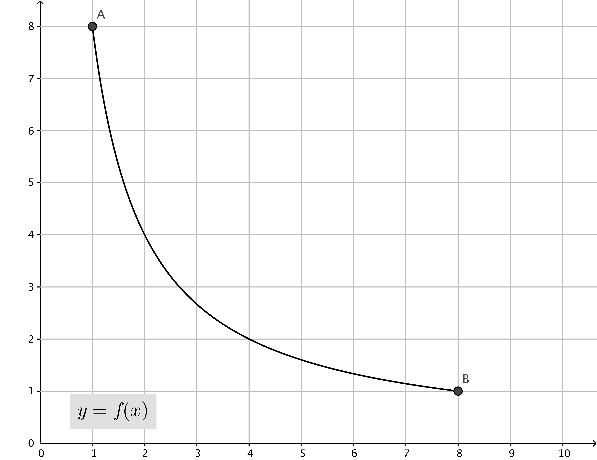
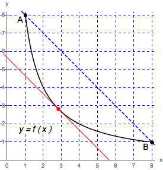

- (a)
- In the figure above, draw a secant line joining the points \(A = (1, f(1))\) and \(B = (8, f(8))\).
- (b)
- Find the slope, \(m_{\text {sec}}\), of this secant line.
- (c)
- Show that the function \(f\) satisfies the conditions of the Mean Value Theorem on
the interval \([1, 8]\) and find a point (or points) guaranteed to exist by the Mean Value
Theorem. \(f\) is continuous on the interval \([1, 8]\), \(f\) is differentiable on the interval \((1, 8)\). By the Mean Value Theorem there exists a(t least one) point \(c\) in \((1, 8)\) such that\[ f'(c) = \frac {f(8) - f(1)}{8 - 1} = -1 \]
Now \(f'(x) = -8/x^2\) hence
\begin{align*} f'(c) = -1 &\iff \frac {-8}{c^2} = -1 \\ &\iff c^2 = 8 \\ &\iff c= \pm 2\sqrt {2} \end{align*}Since \(c\) must be in \((1, 8)\) we have that \(c = 2\sqrt {2}\) is the only point in \((1, 8)\) with \(f'(c) = -1\).
